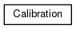
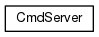
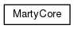
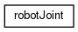

Main Page
Namespaces
Classes
Files
Class List
Class Hierarchy
Class Members
Class Hierarchy
Go to the textual class hierarchy




ros_marty
Author(s): Alejandro Bordallo
autogenerated on Mon Jun 19 2017 12:27:30